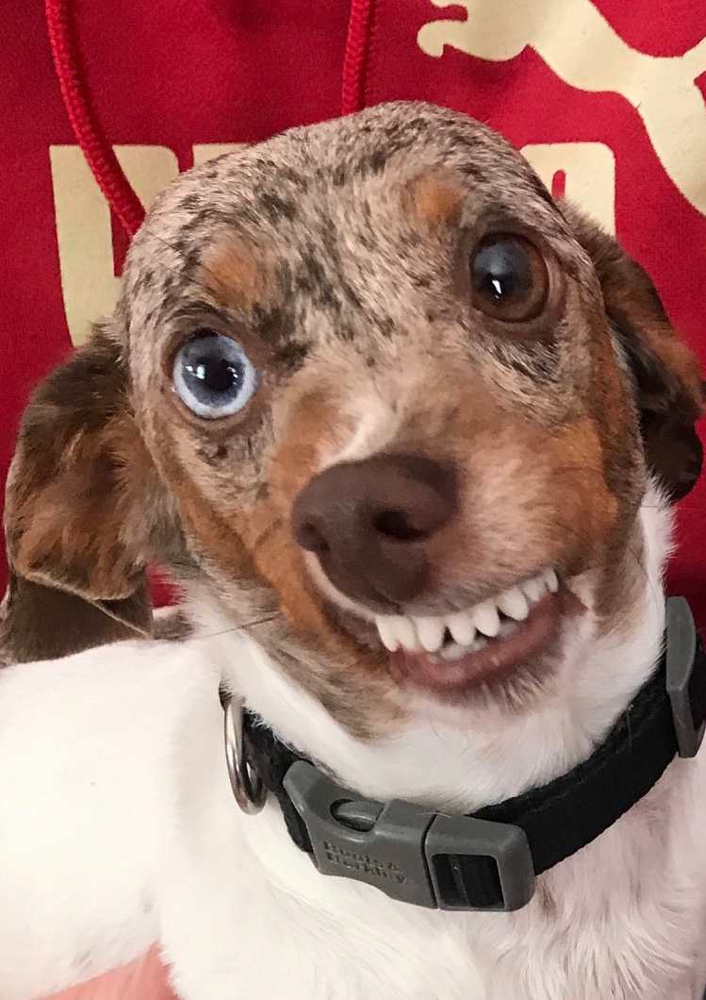

Hobie Wayne

Summary
I am an experienced Fur Friend and Companion who is only as hardworking and dedicated as I have to be to earn treats and ear rubs, as dictated by my miniature dachshund breeding.
Education
- Obedience Training, School of My Humans Wish (2015-Present)
- Self-Study (2015-Present)
- On the Job Training, Fur Brother from Another Mother Inc. (2015-2021)
- Introduction to Life, Biological Mother University (2015)
Work Experience
Volunteer - Hobie Inc.
March 2015 - Present
- Home Security Services
- Barking to alert others of anyone, anything, or sometimes nothing at all near my home of residence.
- Chasing small critters and rodents in the backyard.
- Emotional Support
- Providing hugs, kisses, comical relief, listening ears, and shoulder to cry on, as needed
- Cleaning Services
- Dishes
- Hoovering dropped food
Skills
- Alarm System: 5/5
- Eliminating Chew Toys with Surgical Precision: 5/5
- Cleaning Food Messes: 5/5
- Customer Service: 4.5/5
- Listening Skills: 3.5/5
- Organizational Skills: 3/5
- Guard Duties: 1/5
Awards and Certifications
- Best Dog (When I Want to Be) Award - My Mom LLC. (January 2024)
Other